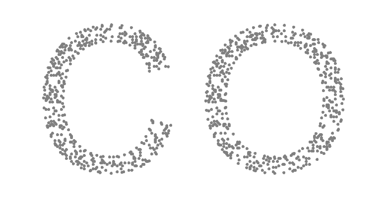
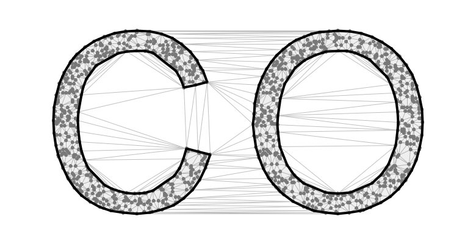

Implementation details for a 2D alpha shape utility
Part 1: Concepts
Recently, the Tinfour software project introduced a utility for creating 2D alpha shapes based on the Delaunay triangulation[1]. These notes provide a brief introduction to the alpha shape concept and describe implementation details for the utility. That information is intended to help developers use any alpha shape implementation to its best advantage (any implementation, not just ours). Also, our discussion of the techniques used in the Tinfour software should provide insights for developers who wish to extend the software or apply its ideas to their own application development.
The figure below shows a set of scattered points that form a recognizable shape in the form of the letters "C" and "O". Human beings are adept at picking out shapes from visual ques, particularly when an image presents planar data. For some applications, it may be useful to give a computer a similar ability to construct a digital outline of a shape from a set of scattered points. In 1983, Edelsbrunner, Kirkpatrick, and Seidel presented a technique for doing just that. Their method uses a structure that they called the alpha shape.
To find an alpha shape, Edelsbrunner's technique begins by constructing a Delaunay triangulation from the scattered points. It then applies a circle-based criterion for marking edges from the triangulation as belonging to a potentially non-convex structure. In the figure below, the edges from the Delaunay triangulation are shown as thin gray lines. Edges that are selected as boundary components are linked together to create polygon features. Those features comprise the alpha shape.
So how do we select which edges belong to the underlying shape? Intuitively, it seems that we can separate features based on the local density of the sample points. Where points are massed close together, we assume they belong to the same structure. Where points are widely spaced, we assume they represent separate features. Edelsbrunner's introduction of the alpha shape concept formalizes that intuition into an edge-selection criterion based on constructing circles of an arbitrarily specified radius[2]. For these notes, we will call that radius alpha, or α. For each edge in the Delaunay triangulation of length less than 2α, we can construct two open circles of radius α that intersect the endpoint vertices of the edge. The figure below illustrates the geometry of the twin alpha circles. In the alpha shape specification, edges are classified as being “α-exposed” or “α-unexposed” depending on whether neighboring vertices appear within the alpha circles. If at least one of the circles associated with an edge is empty, the edge is classified as α-exposed. If both circles contain neighboring vertices, the edge is classified as α-unexposed. When the alpha shape is constructed, exposed edges are treated as being exterior to the alpha shape. Unexposed edges are selected as belonging to the interior of the alpha shape.
The figure below shows empty alpha circles for edges that were selected as α-exposed. To avoid clutter, non-empty circles are omitted. The specification of the alpha radius is arbitrary. Picking an alpha radius often requires some kind of human input or trial-and-error process. A larger alpha radius will result in simpler shapes with a sufficiently large parameter leading to a convex hull. A smaller radius generally introduces concavities into the shape.
In addition to classifying edges as either exposed or unexposed, an alpha shape implementation needs to identify edges that are to be treated as boundaries. Edelsbrunner classified edges as boundaries when only one of the open circles contained a point and the other was empty. Tinfour uses a modified version of this rule which is discussed below.
Unfortunately, it is not always clear how to choose a value for α. In practice, implementations try to pick an alpha radius that is scaled appropriately to the overall spacing of the sample points. Clearly, doing so requires some pre-existing knowledge of the nature and scale of the data. To create the figure below, we specified different alpha values for a set of sample points based on the uppercase letter A.
For an alpha value of 2.5 units, all the points in the sample set lie within the bounds of the alpha shape polygons. At the smaller radii, the shape begins to fracture into multiple disjoint polygons. For alpha values 1.0 and 0.5, the radius is small enough that many of the points in the sample set are not incorporated into the alpha polygons. Technically, these orphan vertices are part of the alpha shape, but they do represent a slightly different implementation challenge. The Tinfour AlphaShape logic collects these orphan vertices into a separate list that can be accessed once the alpha shape is constructed.
When trying to pick an alpha value for processing, it is sometimes useful to look at the lengths of the edges in the source Delaunay triangulation. For this example, we used a sans serif font with a font-size of 72 points. Since the uppercase letter A does not include descenders, its height was somewhat less than the full size of the font. In the table below, we refer to sizes using the generic term "units" to emphasize the idea that the alpha radius is not tied to any particular unit system as long as it is consistent with the scale of the input data.
| Height of letter form | 51 units |
| Median edge length | 1.546 units |
| 65th percentile length | 1.996 units |
| 80th percentile length | 2.519 units |
The Tinfour implementation modifies the classic alpha shape rule for identifying borders. In a classic alpha shape, an edge is identified as a border if one of the alpha circles contains an input point and the other is empty. In the Tinfour modification, an edge is treated as a border if one or both of the associated alpha circles contain an input sample point, but all the contained points lie on the same side of the edge.
One well known short coming of the classic alpha shape definition is that as the alpha radius gets smaller the process tends to create cavities in the output. These cavities appear as either small holes or v-shaped splits in the boundaries of the shape. The Tinfour modification reduces this effect. For a well-chosen alpha radius value, the difference between the results is not substantial. But for smaller radius values, it can become significant.
The figure below illustrates a case in which the classic alpha-shape technique gives rise to small holes along the inside of the edges in the letter form. These cavity features could be eliminated by increasing the radius, but doing so would tend to fill in some of the tight corners in the shape. As the figure shows, the Tinfour modifications can simplify the overall shape and reduce cavitation artifacts.
There are a few special considerations when applying the alpha-circle selection process. First off, for a reasonable choice of α, some edges in the Delaunay triangulation may be longer than the diameter of the alpha circle, 2α. Long edges often appear along the perimeter of the Delaunay triangulation, but as we saw in the figures above they can also occur in empty or sparsely populated areas in the data. The implementation described in these notes specifies that edges of length greater than the diameter of the alpha circles are treated as exposed. Additionally, the classic alpha-shape specification treats the alpha circles as open circles. So, a vertex lies within an alpha circle only if its distance from the circle center is less than the radius
To see how an alpha shape might be used, consider a mobile robot or all-terrain vehicle navigating a stand of trees. If we simplify the trees as single points (or sets of points) and the robot as a circle of a fixed radius, then the resulting alpha shape gives the boundaries of navigable regions within the wooded area. Although this example may sound contrived, it is actually the idea was explored by Weingarten and Siegwart (2006) as a way of performing Simultaneous Localization and Mapping (SLAM) of indoor environments. Others, such as Trevor (2012) and Hou (2019) incorporated alpha shape methods into a broader suite of techniques for similar purposes.
The Tinfour software project is currently exploring using alpha shapes as part of its Simple Volumetric Model (SVM) to identify regions with different data collection characteristics in bathymetric survey data sets. In situations in which it is not feasible to collect data in near-shore areas, alpha shape processing allows the software to separate regions in which data is readily available (deeper water) for modeling versus areas where alternate methods must be used.
The alpha shape technique provides a way of extracting a polygon-based representation of the distribution from a set of individual data points. The quality of the results depends on the specification of a parameter giving the radius of circles used to select edges from a Delaunay triangulation.
Part 1 of this article introduced concepts related to the alpha shape. Part 2 describes the algorithms and implementation details for Tinfour's version of the alpha shape technique. Part 3 gives a simple computation for finding the centers of the alpha circles from the endpoints of a line segment and an arbitrarily specified radius.
[1] The Delaunay triangulation creates a mesh of triangle facets that is optimal in many regards. The Delaunay, which is the focus of the Tinfour software project, is a useful tool for interpolation, grid construction, and surface analysis. For more details see An introduction to the Delaunay triangulation.
[2] Some authors use different definitions for the alpha parameter. Edelsbrunner's original paper treated the parameter as being the inverse of the radius of the alpha circles (α=1/r), others refer to it as the square of the radius (α=r2). All examples in this article treat alpha as the radius of the selection circles.
[3] Although this article uses letter forms as input data sets for the alpha shape algorithm, there is no intrinsic relationship between alpha shapes and the alphabet. This article uses letter forms because they provide a convenient source of sample data.
[4] For a different perspective on alpha shapes, check out Martin Davis' article Alpha Shapes in JTS.
[5] Kaspar Fischer gives detailed background and mathematic proofs in his Introduction to Alpha Shapes.
Edelsbrunner, Herbert; Kirkpatrick, David G.; Seidel, Raimund. (1983). On the shape of a set of points in the plane, IEEE Transactions on Information Theory, 29 (4): 551–559, doi:10.1109/TIT.1983.1056714.
Fischer, K. (2000). Introduction to alpha shapes. Stanford Computer Graphics, Stanford University. Accessed July 2025 from https://graphics.stanford.edu/courses/cs268-11-spring/handouts/AlphaShapes/as_fisher.pdf
Hou, Jiawei & Yuan, Yijun & Schwertfeger, Sören. (2019). Area Graph: Generation of topological maps using the Voronoi diagram. 509-515. 10.1109/ICAR46387.2019.8981588. Accessed July 2025 from https://doi.org/10.48550/arXiv.1910.01019
Trevor, Alexander & III, Rogers & Christensen, Henrik. (2012). Planar surface SLAM with 3D and 2D sensors. Proceedings - IEEE International Conference on Robotics and Automation. 10.1109/ICRA.2012.6225287.
Weingarten, J. & Siegwart, R. (2006). “3D SLAM using planar segments”. In: 2006 IEEE/RSJ International Conference on Intelligent Robots and Systems. October 2006, pp. 3062–3067. DOI: 10.1109/IROS.2006.282245.